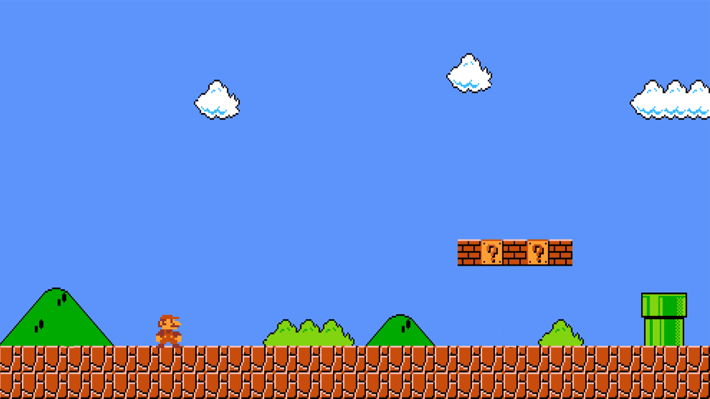

Home |
Catalog |
About us |
Nostalgic nookSince 2010, Nostalgic Nook has been a place for gamers to relive memories and find unique collectibles. What started as a small passion project has grown into a trusted space for retro and modern gaming fans alike. |
 | |